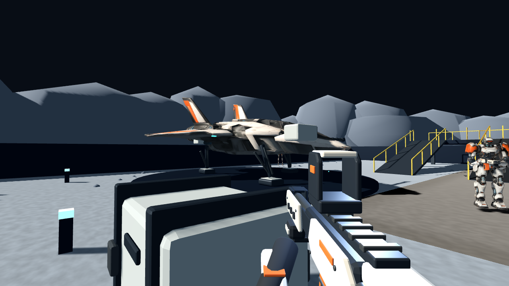

SPACE / REVIEW B / 2026-11-14
飞船到位，机甲上场。
飞船、两类机甲与第一人称离子步枪已接入同一个 60 秒月球射击样片。以下主画面均为游戏实际渲染，生成参考图放在末尾单独展示。
打开本地 Web 试玩运行与验证说明 · 回看评审 A
本轮到评审 B，等待美术方向确认。保持原战斗规则、地图通路和基地室外范围。按要求先做效果，长帧和包体增长已记录，尚未集中优化。远山、服务站、部分道具、HUD 和音效仍待后续阶段；不是整张概念图已经完成。
评审 A → B
飞船：云模型主轮廓，程序化精确附件

尖机头、后掠翼和双尾翼保留；三点落架、翼炮、导弹挂载单独装配。
主壳归一化到最大平面尺寸 11 米，位于原停机坪范围。主壳碰撞在制作端生成，停机坪有独立可行走碰撞；细小挂载不添加复杂碰撞。起落架接地，室外路线重新烘焙并验证。
两类机甲：保留玩法，替换外形和活动结构
保留头、头壳、躯干、肩、肘、髋、膝、脚和武器插槽。采用刚性分件动画，没有宣称完成复杂蒙皮或专业动作捕捉。近景关节切口、握持和极限姿势仍属于后续动作打磨项。
第一人称枪械
枪身、装甲板、能量腔、护罩、导轨、枪托、空心枪口、瞄具及手臂由 Blender Python 生成。第一/第三人称共用设计，第三人称导出不含玩家手臂。枪口与瞄准轴通过视觉配置独立标定。当前枪身比云模型更干净，微磨损、换弹动作和瞄具屏幕占比仍可在本轮评审后精修。
Web 实机与狂暴
验证结论
- 原生 60 秒完整回合、45 秒狂暴、结算重开、暂停冻结、独立分数与旧图切换阻止通过。
- 地图标记导航可达；真实角色沿坡道走上服务平台。
- 两类机甲原始/受伤状态的真实子弹爆头、单次计分、反馈清理、暂停、减弱动态效果及效果预算检查通过。月球入口禁用的搞怪模式不纳入月球测试，保留主线独立测试。
- 新武器 ADS 对位、弹匣移动、突击兵蓄力/挥刀/恢复状态检查通过；原主线武器桌面与触控瞄准回归通过。
- Web 连续射击、换弹、完整回合、结算、重开和暂停通过；触控模拟的移动与开火并行、换弹、ADS、手雷及暂停恢复通过。浏览器未记录脚本错误。
这些是自动化实际渲染与交互检查，不等同于人工试玩。没有物理手机或持续温度测试结论。
长帧记录：留待集中优化
| 指标 | 评审 A | 评审 B |
|---|
| 原生 P95 | 7.19 ms | 6.91 ms |
| 原生 P99 | 8.80 ms | 8.56 ms |
| 原生最长帧 | 67.24 ms | 30.82 ms |
| Web P95 | 16.80 ms | 16.80 ms |
| Web P99 | 16.80 ms | 16.80 ms |
| Web 最长帧 | 299.90 ms | 83.20 ms |
同机 Apple M5、1280 × 720；原生关闭帧率上限与 VSync，使用单调时钟帧间隔；Web 使用 Chrome RAF 间隔。两种口径都不是 GPU 时间，不能互相混比。每阶段只有单轮样本且 AI 路径不同，小幅差异不证明性能改善。正式采样期间不读回截图，也不并行执行资产生成或其他渲染测试。
原生 43–48 秒区间：P95 7.25 ms，最长 12.68 ms。绘制调用抽样范围 204–545。Web 大于 33.3 ms 的帧共 5 个；完整时间列表已存档。仍需区分首次材质/特效使用、角色数量、阴影、主线程和调度影响，当前没有归因结论。
最终 PCK 55.08 MiB（评审 A 21.20 MiB）；保留共享旧角色/特效依赖，尚未做资源裁剪。原 15 MB 内容预算及绘制预算没有通过，不能把本轮作为性能验收。
长帧问题与时间列表 · 原生完整帧数据 · Web 完整帧数据 · 触控验证 · 新资产交互验证 · 包体审计
游戏导出物的独立检查
以下直接加载游戏中的 GLB，由 Godot Compatibility 渲染；采用独立检查灯光与纯色背景，供看轮廓、附件和背面结构，不替代上方的地图内效果。
制作投入与可编辑源
| 资产 | 三角形 | 网格 | 材质 |
|---|
| rifle-mech | 29,055 | 36 | 10 |
| assault-mech | 21,059 | 26 | 5 |
| interceptor | 29,132 | 25 | 6 |
三个 Tripo 任务各 110 credits，共 330；枪械和精确附件没有新增云生成费用。任务清单见 生成记录。以上为当前导出结构统计，不是最终性能目标。源文件在 art_source/space/heroes，包含内嵌贴图的归一化输入、装配后的 Blender 文件及可重复运行脚本。
单件生成参考图
下列为 AI 设计输入，不是游戏实机；上方截图才是评审 B 的实现结果。
本次请重点看
飞船轮廓与停机坪尺度、两类机甲辨识度、第一人称枪械屏幕占比与色彩搭配。确认后再扩大场景替换、统一磨损、补全 HUD/音效与可破坏物；性能问题按你的要求留到后续集中处理。本地预览只在 space 分支，不覆盖主线和生产站。